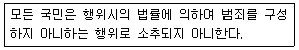
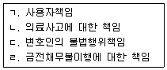

경비지도사-1차(법학개론,민간경비론) (2010-11-14 기출문제)
1과목: 법학개론
1. 다음의 헌법 규정은 어떠한 원칙을 선언한 것인가?

- 신법우선의 원칙
- 특별법우선의 원칙
- 상위법우선의 원칙
- 법률불소급의 원칙
(정답률: 57%)

2. 현행법상 권리와 의무에 관한 설명으로 옳은 것은?
- 실효의 원칙은 권리남용금지의 원칙으로부터 파생된 것이다.
- 평등권, 자유권, 참정권 등은 국가적 공권이다.
- 유체물은 물론이고 전기 기타 관리할 수 있는 자연력도 사권의 객체가 될 수 있다.
- 금전급부의무는 소극적 의무이고, 경업피지의무는 적극적 의무이다.
(정답률: 36%)
3. 민법상 권리의 충돌에 관한 설명으로 옳지 않은 것은?
- 채권이 충돌하는 경우, 먼저 성립한 채권이 나중에 성립한 채권에 우선한다.
- 채권자가 파산한 경우, 채권자평등의 원칙이 적용된다.
- 제한물권은 소유권에 우선한다.
- 대항요건을 갖춘 부동산의 임차권은 나중에 성립한 전세권에 우선한다.
(정답률: 33%)
4. 법의 효력에 관한 설명으로 옳지 않은 것은?
- 제정법의 유효기간은 시행일로부터 폐지일까지이다.
- 경과법이란 법령의 제정이나 개폐가 있을 때, 진행 중인 사항에 관하여 적용될 법령을 규정하고 있는 법을 말한다.
- 신법과 구법의 규정이 상반되는 경우, 항상 신법이 우선한다.
- 일반법과 특별법의 규정이 상반되는 경우, 항상 특별법이 우선한다.
(정답률: 36%)
5. 법의 분류에 관한 설명으로 옳은 것은?
- 경제법은 사회법 영역에 속한다.
- 특정범죄가중처벌 등에 관한 법률은 형사절차법에 속한다.
- 형법은 임의법에 속한다.
- 민사소송법은 사법(私法) 영역에 속한다.
(정답률: 39%)
6. 법규를 적용하기 전에 사실을 확정하기 위한 방법이 아닌 것은?
- 사실의 발견
- 사실의 입증
- 사실의 추정
- 사실의 간주
(정답률: 49%)
7. 법과 관습에 관한 설명으로 옳지 않은 것은?
- 법은 인위적으로 만들어지는 반면, 관습은 자연발생적 현상으로 생성된다.
- 법은 국가 차원의 규범인 반면, 관습은 부분 사회의 관행이다.
- 법위반에는 법적 제재가 가능한 반면, 관습위반은 사회적 비난을 받는데 그친다.
- 법은 합목적성에 기초하는 반면, 관습은 당위성에 기초한다.
(정답률: 26%)
8. 법의 존재형식에 관한 설명으로 옳지 않은 것은?
- 헌법에 의하여 체결ㆍ공포된 조약은 국내법과 동일한 효력을 갖는다.
- 불문법에는 사실인 관습, 판례, 조리가 있다.
- 성문법이 상호간에 충돌할 때에는 상위법우선의 원칙이 적용된다.
- 관습법은 성문법에 대하여 보충적 효력을 갖는다는 것이 다수설이다.
(정답률: 31%)
9. 불문법의 법원성에 관한 설명으로 옳은 것은?
- 관습법은 사법보다 공법의 영역에서 중요한 법원이다.
- 성문법주의 국가에서는 일반적으로 판례를 독립한 법원으로 인정하고 있다.
- 조리는 공서양속, 사회통념, 정의 등으로 표현되기도 한다.
- 유수사용권과 온천권은 우리나라에서 인정되고 있는 관습법이다.
(정답률: 56%)
10. 민법상 권리의 원시취득에 해당하지 않는 것은?
- 상속
- 선의취득
- 무주물에 대한 선점
- 건물의 신축에 의한 소유권 취득
(정답률: 47%)
11. 헌법의 규정과 관련 법률의 연결이 옳지 않은 것은?
- 국가는 법률이 정하는 바에 의하여 최저임금제를 시행하여야 한다. - 사회보장기본법
- 연소자의 근로는 특별한 보호를 받는다. - 근로기준법
- 국가유공자의 유가족은 우선적으로 근로의 기회를 부여받는다. - 국가유공자 등 예우 및 지원에 관한 법률
- 근로자는 근로조건의 향상을 위하여 자주적인 노동 3권을 갖는다. - 노동조합 및 노동관계조정법
(정답률: 44%)
12. 헌법재판소에 관한 설명으로 옳지 않은 것은?
- 헌법재판소는 위헌정당해산심판권, 탄핵심판권, 권한쟁의심판권 등을 갖는다.
- 위헌법률심판은 법원의 제청을 전제로 한다.
- 헌법재판소의 장은 국회의 동의를 얻어 대통령이 임명한다.
- 헌법재판소의 재판관은 벌금 이상의 형의 선고에 의하지 아니하고는 파면되지 아니한다.
(정답률: 54%)
13. 헌법상 사회권적 기본권에 해당하는 것은?
- 언론ㆍ출판의 권리
- 직업선택의 권리
- 학문과 예술의 권리
- 인간다운 생활을 할 권리
(정답률: 32%)
14. 헌법상 탄핵소추의 대상이 될 수 없는 자는?
- 국회의원
- 국무총리
- 감사위원
- 법관
(정답률: 20%)
15. 민법상 계약에 관한 설명으로 옳지 않은 것은?
- 도급계약은 전형계약에 해당한다.
- 매매계약은 전형적인 유상ㆍ쌍무계약이다.
- 계약에 관한 규정은 임의규정적 성격이 강하다.
- 전형계약은 비전형계약에 대하여 우선적 효력이 있다.
(정답률: 44%)
16. A 주식회사는 B 경비회사와 경비업무에 관한 도급계약을 체결하였다. 이후 B 경비회사의 경비원 甲이 C 보험회사에 가입된 경비차량을 주차시키던 중 동료 경비원 乙을 다치게 한 경우, 乙이 손해배상을 청구할 수 있는 대상이 아닌 것은?
- A 주식회사
- B 경비회사
- 경비원 甲
- C 보험회사
(정답률: 42%)
17. 민사소송에 관한 설명으로 옳은 것은?
- 영업정지처분에 대한 분쟁은 민사소송의 대상이 된다.
- 화해는 당사자 간의 상호양보를 통하여 분쟁을 해결하는 절차이다.
- 중재는 법관의 판단에 복종하기로 합의하여 분쟁을 해결하는 절차이다.
- 원고와 피고의 대립관계가 존재하지 않아도 민사소송이 성립될 수 있다.
(정답률: 43%)
18. 민사소송법의 기본원리에 관한 설명으로 옳지 않은 것은?
- 민사소송을 지배하고 있는 원리는 실체적 진실주의이다.
- 당사자가 신청한 범위 내에서만 판결하는 처분권주의가 원칙이다.
- 민사소송은 공개심리주의가 원칙이다.
- 소송진행 중이라도 청구의 포기나 인락을 통해 소송을 종료할 수 있다.
(정답률: 29%)
19. 민법상 법률행위의 무효원인이 아닌 것은?
- 공서양속의 위반
- 통정허위표시
- 강박에 의한 의사표시
- 의사무능력자의 행위
(정답률: 42%)
20. 민법상 본등기의 효력이 아닌 것은?
- 권리변동적 효력
- 대항적 효력
- 추정적 효력
- 순위보전적 효력
(정답률: 29%)
21. 다음 중 무과실책임에 해당하는 것을 모두 고른 것은?

- ㄱ, ㄷ
- ㄱ, ㄹ
- ㄴ, ㄷ
- ㄴ, ㄹ
(정답률: 42%)
22. 근대 민법의 3대 원리에 해당하는 것으로만 묶인 것은?
- 과실책임의 원칙 - 유추해석금지의 원칙
- 소유권절대의 원칙 - 소급효금지의 원칙
- 사적자치의 원칙 - 과실책임의 원칙
- 소유권절대의 원칙 - 명확성의 원칙
(정답률: 36%)
23. 민법상 권리에 관한 설명으로 옳지 않은 것은?
- 권리능력에 관한 규정은 당사자의 합의로 그 적용을 배제할 수 없다.
- 채권자취소권은 소의 제기 없이 권리행사가 가능하다.
- 비영리사단법인에서 사원의 결의권은 출자액과 무관하게 평등하다.
- 상품권, 입장권 등은 무기명채권이다.
(정답률: 39%)
24. 형법상 위법성조각사유에 해당하지 않는 것은?
- 피해자의 승낙
- 강요된 행위
- 정당방위
- 자구행위
(정답률: 38%)
25. 공판절차 이전에 행해질 수 있는 것으로만 묶인 것은?
- 가석방 - 선고유예
- 기소유예 - 구속적부심사
- 불기소처분 - 가석방
- 집행유예 - 영장실질심사
(정답률: 33%)
26. 친고죄와 반의사불벌죄에 관한 설명으로 옳지 않은 것은?
- 강간죄, 강제추행죄, 모욕죄는 친고죄에 해당한다.
- 폭행죄, 협박죄, 명예훼손죄는 반의사불벌죄에 해당한다.
- 고소는 수사기관에 대하여 서면 또는 구두로 할 수 있다.
- 고소권자는 대법원 판결선고 전까지 고소를 취소할 수 있다.
(정답률: 34%)
27. 민법상 임의대리에 관한 설명으로 옳지 않은 것은?
- 의사표시의 하자는 본인을 기준으로 판단한다.
- 대리인은 행위능력자임을 요하지 아니한다.
- 사실행위에 대하여는 대리가 불가능하다.
- 복대리인은 대리인이 선임한 본인의 대리인이다.
(정답률: 15%)
28. 수사와 공소에 관한 설명으로 옳은 것은?
- 강제수사가 원칙이고, 예외적으로 임의수사가 허용된다.
- 공소제기 후에는 수사를 할 수 없다.
- 공소사실과 동일성이 인정되는 사실까지 공소제기의 효력이 미친다.
- 공소장에는 피고인과 공소사실만 기재하면 족하다.
(정답률: 56%)
29. 범죄의 혐의가 인정되고 소송조건이 구비되었으나, 범인의 연령, 성행, 범행동기 등을 참작하여 공소를 제기하지 아니하는 처분은?
- 기소유예
- 집행유예
- 기소중지
- 선고유예
(정답률: 52%)
30. 형법상 개인적 법익에 대한 죄가 아닌 것은?
- 과실치사죄
- 업무방해죄
- 재물손괴죄
- 방화죄
(정답률: 42%)
31. 甲과 乙은 각각 독립된 범죄의사로 동시에 丙에게 발포하였고, 丙은 이 중의 한 발을 맞고 사망하였다. 그러나 누가 쏜 탄환에 맞았는지 밝혀지지 않은 경우, 甲과 乙의 죄책은?
- 살인죄
- 살인미수죄
- 상해치사죄
- 상해죄
(정답률: 47%)
32. 형법상 책임에 관한 설명으로 옳지 않은 것은?
- 심신상실자의 행위는 벌하지 아니한다.
- 농아자의 행위는 형을 감경한다.
- 14세 된 미성년자의 행위는 벌하지 아니한다.
- 심신미약자의 행위는 형을 감경한다.
(정답률: 30%)
33. 상법상 주식회사의 최고 의사결정기관은?
- 이사
- 감사
- 주주총회
- 대표이사
(정답률: 62%)
34. 상법상 회사의 종류와 그 해산사유의 연결이 옳지 않은 것은?
- 합명회사 - 총사원의 동의
- 유한회사 - 사원이 1인으로 된 때
- 합자회사 - 무한책임사원 전원의 퇴사
- 주식회사 - 주주총회의 특별결의
(정답률: 40%)
35. 형법이 그 적용범위와 관련하여 채택하고 있는 원칙이 아닌 것은?
- 속지주의
- 속인주의
- 보호주의
- 세계주의
(정답률: 44%)
36. 행정법상 행정주체로 옳지 않은 것은?
- 대한민국
- 행정안전부장관
- 서울특별시
- 국민건강보험공단
(정답률: 59%)
37. 관할행정청 甲이 乙의 경비업 허가신청에 대해 거부처분을 한 경우, 이에 불복하는 乙이 제기할 수 있는 행정심판은?
- 당사자심판
- 부작위위법확인심판
- 거부처분부당확인심판
- 의무이행심판
(정답률: 20%)
38. 현행법상 노동조합에 관한 설명으로 옳지 않은 것은?
- 노동조합의 파업에 대한 사용자의 직장폐쇄도 쟁의행위에 해당된다.
- 공무원의 노동조합설립은 인정된다.
- 현재 실업 중인 자는 노동조합에 가입할 수 없다.
- 노조전임자는 전임기간 동안 사용자로부터 어떠한 급여도 받을 수 없다.
(정답률: 39%)
39. 사회보장기본법상 국가와 지방자치단체의 책임 하에 생활유지 능력이 없거나 생활이 어려운 국민의 최저생활을 보장하고 자립을 지원하는 제도는?
- 사회복지서비스
- 특별원호
- 공공부조
- 사회보험
(정답률: 46%)
40. 형법의 내용에 관한 설명으로 옳지 않은 것은?
- 형법상으로는 사람이지만, 민법상으로는 사람에 해당되지 않는 경우가 있다.
- 구성요건에 해당하지 않는 행위라도 위법하고 책임이 있는 때에는 범죄로 되는 경우가 있다.
- 고의범을 원칙적으로 처벌하며, 과실범은 형법에 특별히 규정되어 있는 경우에만 처벌한다.
- 범죄의 성립요건을 갖춘 행위에는 형벌이 가해지는 것이 원칙이다.
(정답률: 40%)
2과목: 민간경비론
41. 민간경비와 공경비에 관한 설명으로 옳지 않은 것은?
- 민간경비와 공경비는 공통적으로 범죄예방, 질서유지, 위험방지의 역할을 한다.
- 민간경비는 특정고객을 대상으로 한다.
- 공경비의 범위는 특정적, 제한적이다.
- 민간경비는 손해감소 및 재산보호를 목적으로 한다.
(정답률: 77%)
42. 수익자부담이론의 관점에서 볼 때, 민간경비의 성장요인에 관한 설명으로 옳은 것은?
- 경찰이 수행하고 있는 경찰 본연의 기능이나 역할을 민간경비가 보완하거나 대체하면서 민간경비가 성장했다.
- 공경비는 질서유지와 체제수호 등의 역할을 담당하고, 개인이나 조직의 안전과 보호는 해당 개인이나 조직이 스스로 담당하여야 한다는 인식을 바탕으로 민간경비가 성장했다.
- 치안서비스 생산과정에서 경찰과 같은 공공부분의 역할수행과 민간부분의 공동참여를 통해서 민간경비가 성장했다.
- 경제침체로 실업자가 증가하고 그로 인한 자연스런 범죄증가를 해결하기 위해서 민간경비가 성장했다.
(정답률: 79%)
43. 특정한 현상을 설명함에 있어 그 현상이 경제와 직접적으로 무관한 성격임에도 불구하고, 그 원인을 경제문제에서 찾으려는 이론은?
- 이익집단이론
- 공동화이론
- 공동생산이론
- 경제환원론
(정답률: 89%)
44. A. J. Bilek 이 제시한 민간경비원의 법적 지위의 유형이 아닌 것은?
- 청원주의 권한을 가진 민간경비원
- 특별한 권한을 가진 민간경비원
- 경찰관 신분을 가진 민간경비원
- 일반시민과 같은 민간경비원
(정답률: 76%)
45. 경비의 3대 주요 기능으로 보기 어려운 것은?
- 방범
- 방재
- 방화
- 방풍
(정답률: 72%)
46. 민간경비의 유형 중 한국의 경비업법상 인정되지 않는 경비형태는?
- 신변보호
- 호송경비
- 특수경비
- 민간조사
(정답률: 83%)
47. 한국 민간경비의 역사에 관한 설명으로 옳은 것은?
- 1960년대 국가중요시설의 설립 및 북한의 위협에 대응하기 위하여 경비업법이 제정되었다.
- 1968년 민간경비 산업의 발전을 위해 한국경비협회가 설립되었다.
- 1990년대 후반에 기계경비의 출현을 계기로 비약적인 발전을 이루었다.
- 현대적 의미의 민간경비제도는 주한미군의 군납경비의 일환으로 시작되었다.
(정답률: 74%)
48. 경비원의 역량을 강화시키기 위해서 전문자격증 제도가 필요하다고 주장한 사람은?
- 헨리 필딩
- 로버트 필
- 러셀 콜링
- 알란 핑커튼
(정답률: 71%)
49. 각국 민간경비의 역사적 발전과정에 관한 설명으로 옳지 않은 것은?
- 영국에서 민간경비가 크게 성장한 시기는 산업혁명시대이다.
- 미국에서 민간경비가 획기적으로 발전한 시기는 서부개척시대이다.
- 일본은 1964년 동경올림픽을 계기로 민간경비가 크게 성장하였다.
- 영국의 King's Peace 시기에는 범죄를 국왕의 평화에 대한 도전이 아니라 개인에 대한 위법으로 보았다.
(정답률: 68%)
50. 한국 민간경비원의 법적 지위에 관한 설명으로 옳지 않은 것은?
- 민간경비원의 법적 지위는 일반시민과 같다.
- 국가중요시설에서 근무하는 특수경비원은 수사권이 인정된다.
- 민간경비원은 분사기를 휴대할 수 있다.
- 한국의 민간경비원은 현행범을 체포할 수 있다.
(정답률: 75%)
51. 한국 민간경비업에 관한 설명으로 옳지 않은 것은?
- 민간경비업은 법인이 아니면 할 수 없다.
- 한국의 특수경비원은 권총을 휴대할 수 있다.
- 청원경찰은 경찰과 민간경비제도를 혼용한 제도이며, 대한민국 정부수립 직후 최초로 도입되었다.
- 범죄의 증가와 경찰력의 한계로 민간경비업은 계속 발전하고 있다.
(정답률: 80%)
52. 국내 치안여건과 경찰의 역할에 관한 설명으로 옳지 않은 것은?
- 범죄의 양적ㆍ질적 심화로 인해 경찰은 역할한계에 직면하고 있다.
- 한국은 자치경찰제도를 운영하고 있지 않다.
- 경찰 1인당 담당하는 시민의 비율이 선진국에 비해 높은 편이다.
- 경찰은 민간경비와 마찬가지로 1차적으로 범죄예방에 초점을 두고 대응하고 있다.
(정답률: 69%)
53. 인위적 위해로 볼 수 없는 것은?
- 지진
- 태업
- 시민폭동
- 폭탄위협
(정답률: 75%)
54. 손님을 유도하는 효과와 도둑을 방지하는 이중적인 효과를 갖는 들치기 방지대책은?
- 거울
- 경고표시
- 감시
- 상품전시
(정답률: 52%)
55. 경비조사업무의 과정으로 옳지 않은 것은?
- 경비방어상의 취약점 확인
- 종합적인 경비 프로그램의 수립
- 경비활동 전반에 걸친 주관적 분석
- 요구되는 보호의 정도측정
(정답률: 72%)
56. 특정한 손실이 발생할 때마다 그 사건에만 대응하는 경비형태는?
- 반응적 경비
- 단편적 경비
- 1차원적 경비
- 총체적 경비
(정답률: 87%)
57. 경비수준에 관한 설명으로 옳지 않은 것은?
- 최저수준경비(Level Ⅰ)는 보통 출입문과 자물쇠를 갖춘 창문과 같은 단순한 물리적 장벽으로 구성된다.
- 하위수준경비(Level Ⅱ)는 작은 소매상점, 저장창고 등에 대한 경비를 말한다.
- 중간수준경비(Level Ⅲ)는 보다 발전된 원거리 경보시스템, 경계지역의 보다 높은 물리적 수준의 장벽 등이 조직되어 진다.
- 상위수준경비(Level Ⅳ)는 최첨단의 경보시스템과 24시간 즉시대응체제가 갖춰진 경비체계를 말한다.
(정답률: 56%)
58. 계약경비서비스 유형에 관한 설명으로 옳지 않은 것은?
- 사설경호원에 의해 각종 위해로부터 의뢰인을 보호하는 활동은 신변보호서비스이다.
- 시설방범경비서비스는 시설물에 대한 각종 위해로부터 시설물 내의 인적ㆍ 물적 가치를 보호하는 경비형태이다.
- 순찰서비스는 도보나 순찰차로 한 사람 또는 여러 명의 경비원이 한 팀이 되어 근무지역 내의 시설물들을 정기적으로 확인하는 활동이다.
- 경비자문서비스는 경보응답에 경비원을 급파하고, 이 사실을 일반경찰관서에 송신하는 역할을 한다.
(정답률: 83%)
59. 한 사람의 상관이 직접 통솔할 수 있는 부하의 합리적인 수를 의미하는 것은?
- 통솔기준
- 감독
- 권한위임
- 통솔범위
(정답률: 80%)
60. 기계경비에 관한 설명으로 옳지 않은 것은?
- 인력경비보다 경제적이다.
- 사고발생시 인명피해를 줄일 수 있다.
- 현장에서의 신속한 조치가 가능하다.
- 사고현장의 기록이 용이하다.
(정답률: 79%)
61. 경비부서에서 관리자의 역할에 관한 설명으로 옳은 것은?
- 조사활동은 경비원에 관한 감독ㆍ순찰, 화재와 경비원의 안전, 출입금지구역에 관한 감시 등을 일컫는 활동이다.
- 관리상 역할에는 경비의 명확성, 회사규칙의 위반과 모든 손실에 관한 관리ㆍ감시ㆍ회계, 경찰과 소방서와의 유대관계, 관련문서의 분류 등이 해당된다.
- 예방상 역할에는 예산과 재정상의 감독, 사무행정, 경비문제를 관할하는 정책의 설정, 조직 체계와 절차의 발전 등이 해당된다.
- 경영상 역할에는 기획, 조직화, 채용, 지도, 감독, 혁신 등이 해당된다.
(정답률: 63%)
62. 자체경비와 계약경비에 관한 설명으로 옳지 않은 것은?
- 자체경비는 기업체 등이 조직내에 자체적으로 경비인력을 조직화하여 운용하는 것을 말한다.
- 계약경비는 산업시설 또는 기업시설의 경비에 있어서 경비서비스를 전문으로 하는 경비업체와 계약을 체결하여 운용하는 것을 말한다.
- 자체경비는 비상사태에 있어서 인적자원의 탄력적인 운영이 가능하다.
- 자체경비는 계약경비에 비해 사용자에게 높은 충성심을 갖는다.
(정답률: 81%)
63. 경비계획에 있어서 우선적으로 실시해야 할 사항은?
- 손실예방
- 경비부서의 조직화
- 경비위해요소 분석
- 경비전술의 개발
(정답률: 72%)
64. 보호대상인 물건에 직접적으로 센서를 설치하여 물건이 움직이면 경보를 발생하는 장치로서 고미술품이나 전시중인 물건을 보호하기 위해 사용되는 경보센서는?
- 전자파울타리
- 진동탐지기
- 음파경보시스템
- 전자기계식센서
(정답률: 82%)
65. 경보장치 및 시스템에 관한 설명으로 옳지 않은 것은?
- 일반적으로 기계고장이나 오작동 발견을 목적으로 사용하는 경보장치는 특수경보장치이다.
- 가장 고전적인 방법으로 주요지점에 경비원을 배치하여 비상시에 대응하는 경비체계는 기계경비시스템이다.
- 전화선 등을 이용하여 외부의 경찰서나 소방서에 연락을 취하는 방식의 경비체계는 외래경보시스템이다.
- 경계가 필요한 지점에 감지기나 CCTV를 설치하고, 경비원이 이를 원격 감시하는 형태는 중앙관제시스템이다.
(정답률: 75%)
66. 화재의 단계와 감지기의 연결로 옳은 것은?
- 초기단계 - 이온감지기
- 그을린단계 - 적외선감지기
- 불꽃단계 - 열감지기
- 열단계 - 연기감지기
(정답률: 67%)
67. 상당히 밝은 빛을 만들어 주기 때문에 특정지역에 빛을 집중시키거나 직접적으로 비추는데 사용되는 조명은?
- 투광조명등
- 프레이넬등
- 탐조등
- 가로등
(정답률: 63%)
68. 비상계획기관의 업무활동 시 고려사항으로 옳지 않은 것은?
- 대중ㆍ언론에 대한 정보차단
- 명령지휘부의 지정
- 보고업무시스템의 수립
- 비상시 사용될 장비ㆍ시설의 위치지정
(정답률: 74%)
69. 목재, 종이 등의 가연성 물질이 연소하는 경우로 백색연기를 발생하는 화재 유형은?
- A형 화재
- B형 화재
- C형 화재
- D형 화재
(정답률: 75%)
70. 국가안전에 미치는 중요도 기준에 따라 국가중요시설을 분류할 때, “국가보안상 국가경제 또는 사회생활에 중대한 영향을 끼치는 행정 및 산업시설”은 어디에 해당되는가?
- 가급
- 나급
- 다급
- 라급
(정답률: 66%)
71. 하나의 출입문이 잠길 경우에 전체의 출입문이 동시에 잠기는 잠금장치는?
- 패드록
- 기억식 잠금장치
- 전기식 잠금장치
- 일체식 잠금장치
(정답률: 79%)
72. 경비와 시설보호의 기본원칙에 관한 설명으로 옳은 것은?
- 경계구역과 건축물 입구 수는 안전규칙 범위내에서 최대한으로 유지되어야 한다.
- 잠금장치는 정교하고 파손이 어렵게 만들어져야 하고, 열쇠를 분실할 경우에 대비하여 적절한 조치를 취할 수 있어야 한다.
- 효과적인 경비를 위해서는 안전 경비조명이 설치되어야 하고, 물건을 선적하거나 수령하는 지역은 통합되어야 한다.
- 경비관리실은 가능한 한 건물에서 통행이 많은 곳에 설치하고 직원의 출입구는 주차장으로부터 가까운 곳에 위치해야 한다.
(정답률: 79%)
73. 일반 산업분야 뿐만 아니라 일반 주택에서도 사용되며, 열쇠의 양쪽에 홈이 불규칙적으로 파여져 있는 형태이고, 보다 복잡하며 안전성을 제공할 수 있기 때문에 널리 사용되고 있는 자물쇠의 종류는?
- 돌기 자물쇠
- 핀날름쇠 자물쇠
- 판날름쇠 자물쇠
- 숫자맞춤식 자물쇠
(정답률: 81%)
74. 컴퓨터 부정조작의 유형에 해당하지 않는 것은?
- 프로그램조작
- 콘솔조작
- 입ㆍ출력조작
- 하드웨어조작
(정답률: 60%)
75. 컴퓨터를 이용한 범죄의 특징으로 옳지 않은 것은?
- 증거인멸이 용이하다.
- 범죄의 고의성을 입증하기 용이하다.
- 범행의 자동성과 반복성, 연속성을 가진다.
- 범죄의식이 희박하다.
(정답률: 83%)
76. 컴퓨터 시스템의 관리적 대책에 관한 설명으로 옳지 않은 것은?
- 직무권한의 명확화
- 감사증거기록의 삭제
- 엑세스 제도의 도입
- 레이블링 관리
(정답률: 63%)
77. 컴퓨터 범죄의 용어에 관한 설명으로 옳지 않은 것은?
- 프레임은 타인의 컴퓨터에 무단으로 침입하여 정보를 빼가는 수법이다.
- 살라미 테크닉스는 관심을 두지 않는 작은 이익들을 긁어 모으는 수법이다.
- 데이터 디들링은 데이터의 최종적인 입력 순간에 자료를 삭제하거나 변경하는 수법이다.
- 트로이 목마는 프로그램 속에 범죄자만 아는 명령문을 삽입하는 수법이다.
(정답률: 81%)
78. 한국 민간경비산업의 문제점으로 옳지 않은 것은?
- 경비업자의 손해배상책임 규정이 없다.
- 민간경비원의 자질 및 전문성이 문제되고 있는 실정이다.
- 경비업법과 청원경찰법이 이원화되어 경비의 효율성 등에 장애요인으로 작용한다.
- 일부 업체를 제외하고는 영세한 업체가 대다수이다.
(정답률: 60%)
79. 비인가자의 출입이 일체 금지되는 지역(구역)은?
- 제한지역
- 보호구역
- 통제구역
- 제한구역
(정답률: 66%)
80. 한국 민간경비산업의 발전방안으로 옳지 않은 것은?
- 경비관련 자격증제도의 전문화
- 인력중심의 민간경비산업 지향
- 민간경비 관련 법규 정비
- 민간경비 업무의 다변화
(정답률: 84%)